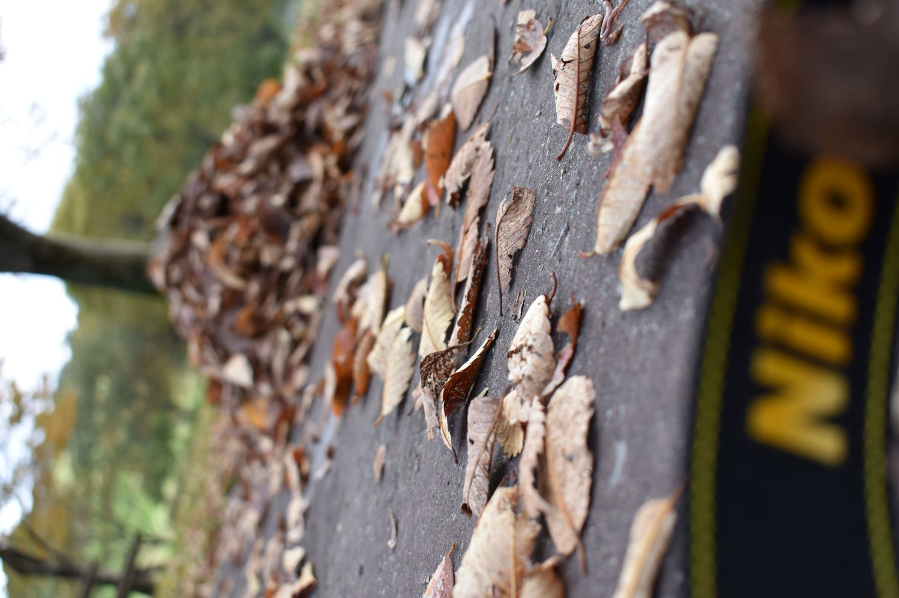
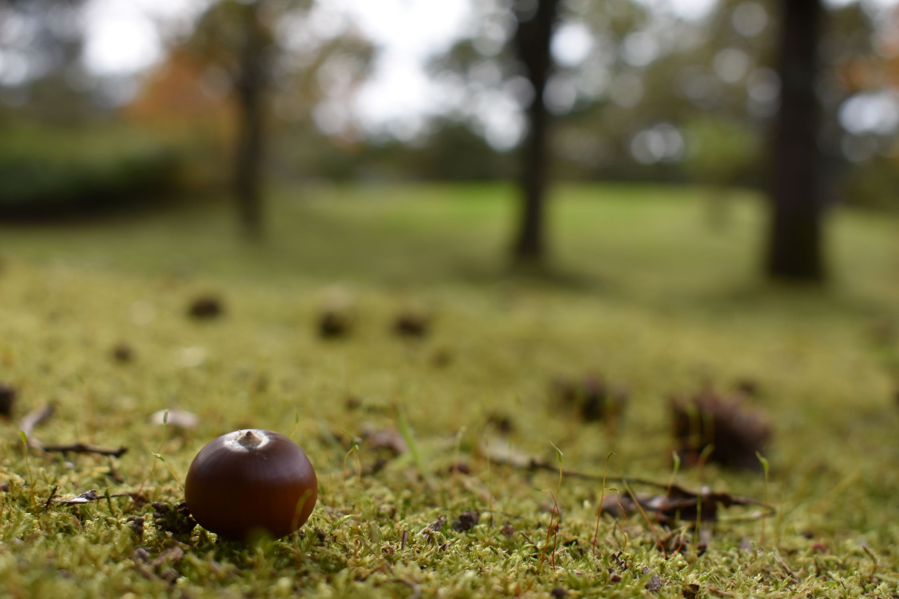
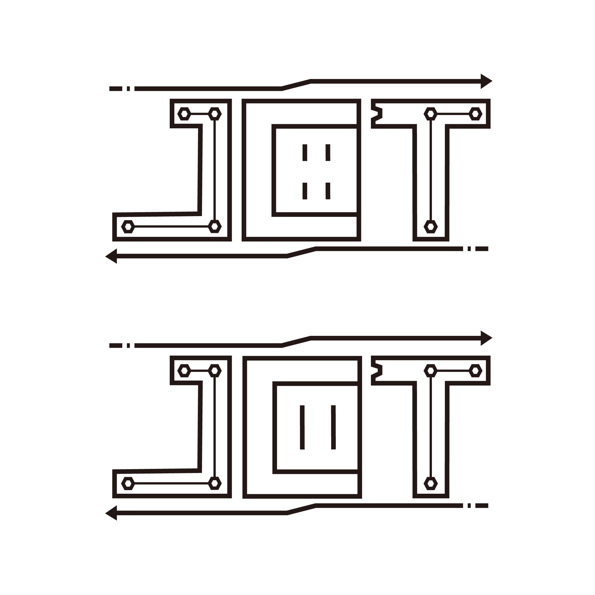

このポートフォリオを作るにあたって
簡素ではありますがこのサイトは私のポートフォリオとなっております。
Html、CSSを学びながら作りました。そのためレスポンシブ対応が
少し対応しきれてないところもあります。スマホでは最初のページの
About&Hobbyの隣に指のアニメーションがあるのですが、
PCの方では画面を縮小した際にしか表示されないようにしました。
悲しい話私には実績や経験はあまりないです。
ですがこれから作っていきたいと思っています。
現在は少しの経験や趣味で構成されています。
上にスライドショーされている画像は自分が出かけたきに撮影したものです。
使えるソフト
いずれも独学でまだ浅いですがフォトショップやイラストレーターの作例を下に挙げていますのでよろしければ御覧ください。
Photoshop
画像のレタッチや切り取りなどの修行中です。
左が加工前で、右が加工後です。

Ilustrator
少しの間ですがCloudWorksというサイトを使用してできるだけクライアントの
要望に沿って作ったりしていました。（採用されることは無かったです。）
下の画像が電気系の会社が応募していた時に作成させてもらったものです。
